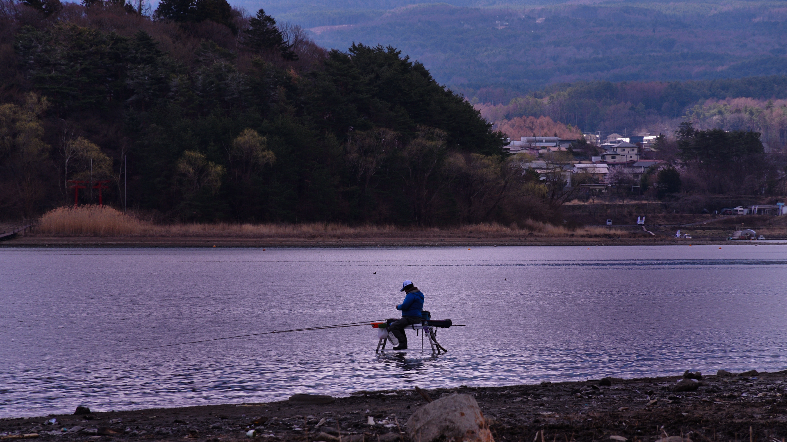
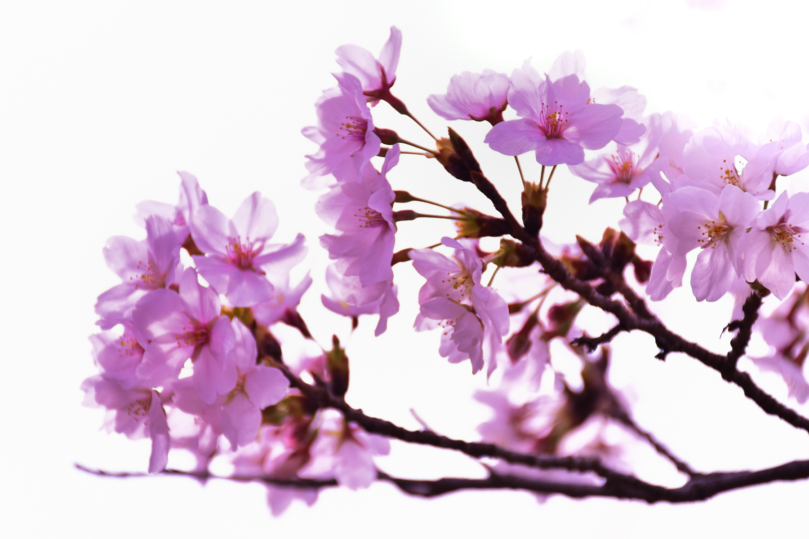
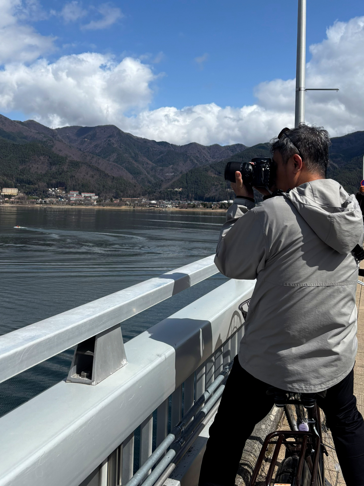

Beyond Every Frame

A visual journey through landscapes, nature and places around the world. Capturing moments through light, atmosphere and perspective.

nar4frame is a personal photography collection dedicated to exploring landscapes, nature and travel through a personal visual perspective.